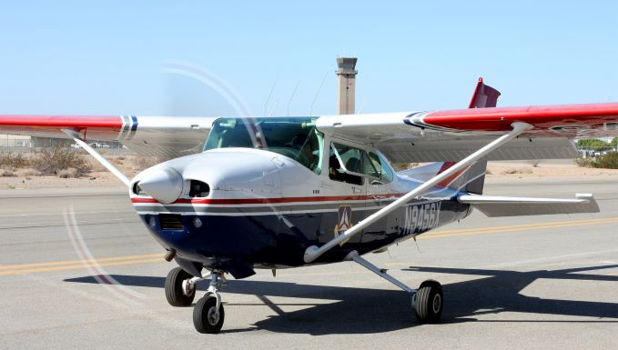
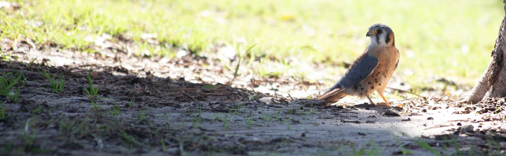

Hello everyone, my name is Anthony Dickerson. I love in Yuma, AZ with my wife and three kids, and countless animals. As of October 1st 2021, I have officially retired from the U.S. Air Force as a C-130 Loadmaster. I currently attend Southwestern College, and plan to graduate spring of 2022 with a Computer Science major.
My free time is spent homeschooling my kids, and keeping involved with the Yuma Orchestra Association.
I have been the Commander of Cadets for my local Civil Air Patrol for the last four years, but am stepping down as my kids are no longer involved.
I am on the board for a local wildlife rehab non-profit Vida Wildlife. We mostly deal in birds of prey, and I am known in AZ as the Kestrel King. Kestrels are very small falcons, but they are fierce and love me for some reason. I have a very high success rate raising them, so every spring, all of the lost rehab babies get transported down to me, and I raise my Army.
